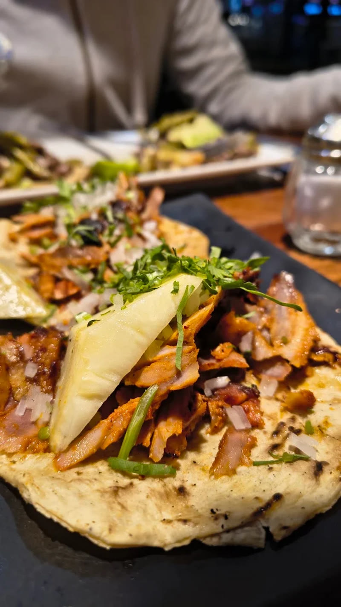
Desde 1962
Trompo, carbón y sazón de barrio. Los tacos que le dan fama a San José Insurgentes, todos los días.
Desde 1962
Tacos con carácter
Desde 1962, en EL NEGRO servimos tacos al trompo y a las brasas en San José Insurgentes. Carne de calidad, salsas propias y la sazón de siempre. Aquí se come como se debe.
Así se ve
Directo del comal a tu mesa
Una probadita de lo que preparamos todos los días.
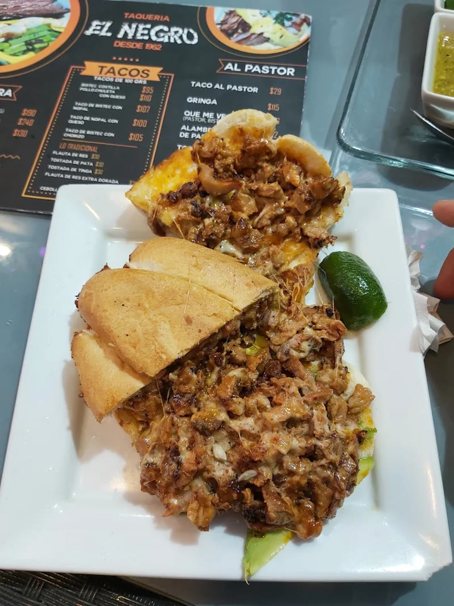
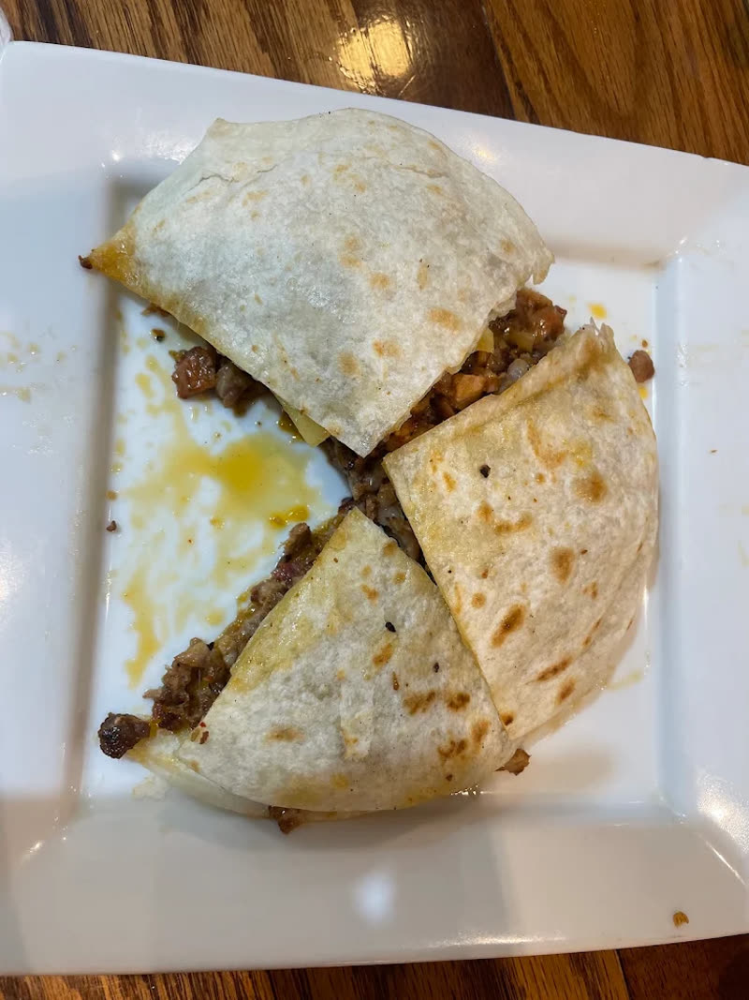
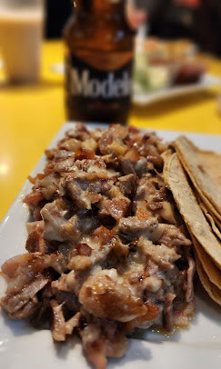
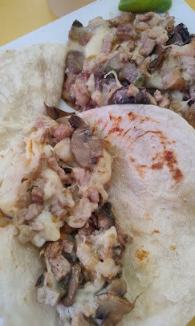
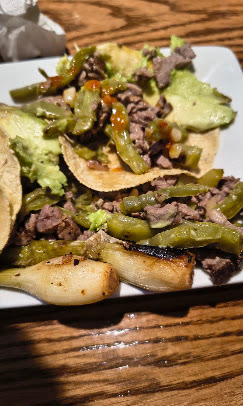
Lo que dicen de nosotros
4.5
1,974 reseñas en Google
"Un icono de la zona, calidad y sabor de los alimentos extraordinario, el pastor y flautas de res mis favoritas, el agua de guanábana y maracuyá son un must."
— Octavio HM
"Ohh el negro… atendido personalmente por sus dueños desde hace más de 30 años, y más de 60 en lo que antes era conocido como 'mi Lupita'. Los mejores tacos al pastor de la CDMX… gringas, flautas, alambres y tortas. Una verdadera tradición de Mixcoac y San José Insurgentes."
— Diego Muñoz Jiménez
"Siempre son una opción para comer taquitos de pastor y suadero, ¡la salsa para el pastor es deliciosaaaa!"
— Priscila R. Nieto
Así se ve EL NEGRO
Galería
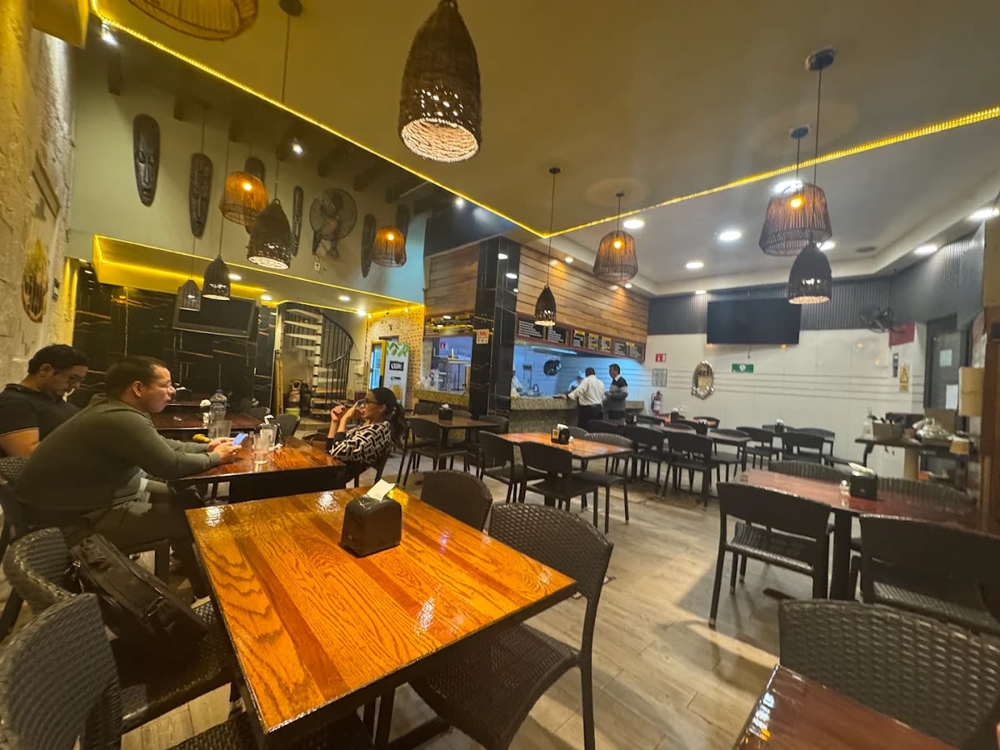
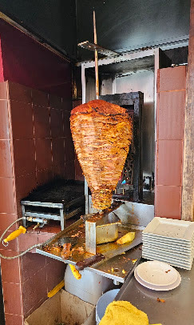
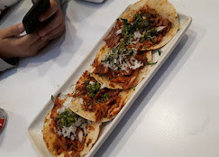
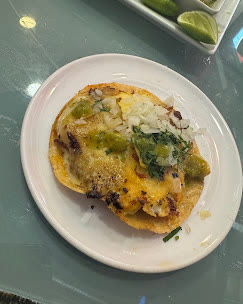
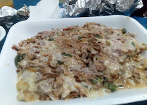
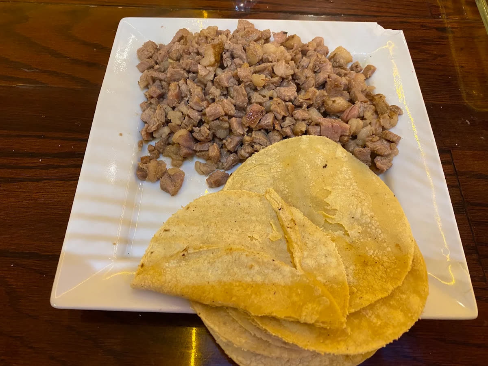
Encuéntranos
Ubicación y horarios
Dirección
Félix Parra 10-B, San José InsurgentesBenito Juárez, 03900, Ciudad de México
Horarios
| Lunes | 2:00 pm – 10:00 pm |
| Martes | 2:00 pm – 10:00 pm |
| Miércoles | 2:00 pm – 10:00 pm |
| Jueves | 2:00 pm – 10:00 pm |
| Viernes | 2:00 pm – 10:00 pm |
| Sábado | 2:00 pm – 10:00 pm |
| Domingo | 2:00 pm – 10:00 pm |